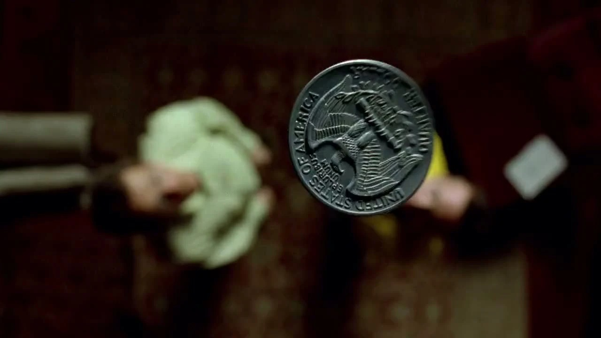
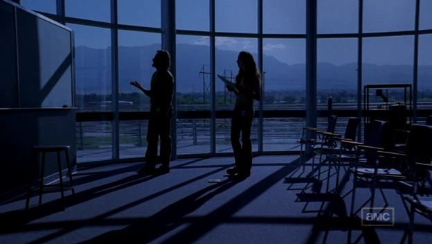
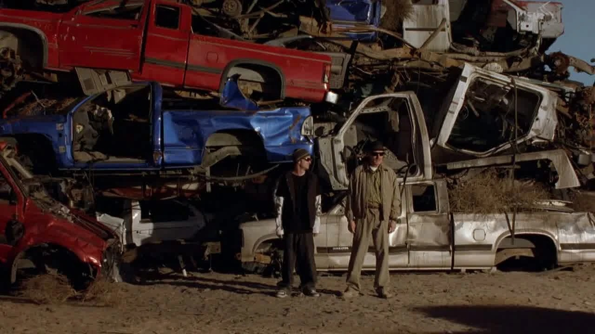

S01 / E01Pilot
当人生只剩倒计时，
越界就有了理由吗？
五十岁的沃尔特收到肺癌诊断，决定用化学知识赚钱。从课堂到荒漠，第一次合作让他找回力量，也把杰西与家人带进秘密。
病与尊严 / 知识与金钱
打开本集图解 ↗剧透截至 S01E01

最初，他想为家人留下一笔钱。可赚钱的道路上，还有被轻视的自尊、无法平分的代价，以及越来越难以解释的秘密。
沿着七集重看：他解决了什么，又把谁带进了新的困局？
目录展示全季剧照与导读；单篇剧透止于当集。每集在新标签页打开。诊断之后，是搭档、秘密，和必须面对的人。
第一次冒险结束了，后果才刚刚开始。
五十岁的沃尔特收到肺癌诊断，决定用化学知识赚钱。从课堂到荒漠，第一次合作让他找回力量，也把杰西与家人带进秘密。

一个幸存者让收尾变成新的拘禁；硬币分工、妻子的追查和浴室的坍塌，揭开搭档之间不等的代价。

沃尔特向俘虏寻找放人的理由；本名、家具店和三明治让对方更像一个人，盘子的缺口又改变了一切。
关心能否抵达一个拒绝被帮助的人？
选择权、旧日信任与自尊，在家中发生碰撞。
他开始发现自己能让人害怕。
可威慑奏效之后，危险真的减少了吗？

治疗费迟迟没有着落，零售利润又不能令沃尔特满意。杰西受伤、雨果被捕，他以海森堡之名亲自面对图科。

擅自提高的供货量把两人推向盗窃。头饰风波暴露“为家人”的借口，蓝色制品成功后，图科的暴力仍然突如其来。
“为了家人”如何变成一句解释？
从三条关系，回看选择背后的需要与代价。以下为截至第一季的个人解读


搭档 / 不对等的需要
化学知识与街头经验相互需要，风险与代价却并不对等。一起越界，能不能让他们真正站到同一边？
从第 2 集关系图读起 ↗
家庭 / 被留在秘密之外
他把秘密叫作保护，她只能在缺失的信息里追问。对家人的责任，是否也包括让对方知道真相？
从第 5 集关系图读起 ↗
亲缘 / 调查的另一面
饭桌上的亲人，工作中的调查者。同一件事，在两个男人那里有两套叙述，距离也悄悄发生变化。
从第 6 集关系图读起 ↗十二个关键节点，从发生了什么，读到一次行动怎样改变下一步。每场的个人解读默认展开。
分开看人物想要什么、手里有什么，以及他们如何误解彼此。三阶段关系图与四组冲突相互参照。
把短对白放回场景，用六处细节重看镜头。剧情事实、个人解读和图片出处分别标注。